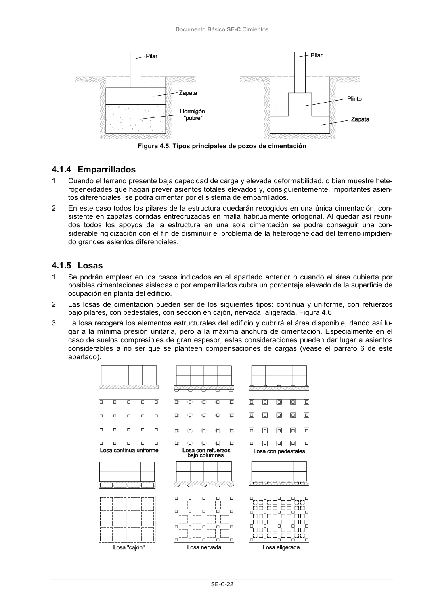

DB-SE-C · 4.1.4 Emparrillados · versión 2019-12-20 · capa oficial
Formatos: JSON compacto · Markdown · PDF fuente
Ámbito del documento · texto del ámbito · documento y tablas
ID técnico a0052 · PDF pág. 27 · jerarquía no validada por persona · contrastado con el literal de la página 27 (candidato tipográfico); no validado por persona · padre: a0010
4.1.4 Emparrillados 1 Cuando el terreno presente baja capacidad de carga y elevada deformabilidad, o bien muestre hete- rogeneidades que hagan prever asientos totales elevados y, consiguientemente, importantes asien- tos diferenciales, se podrá cimentar por el sistema de emparrillados. 2 En este caso todos los pilares de la estructura quedarán recogidos en una única cimentación, con- sistente en zapatas corridas entrecruzadas en malla habitualmente ortogonal. Al quedar así reuni- dos todos los apoyos de la estructura en una sola cimentación se podrá conseguir una con- siderable rigidización con el fin de disminuir el problema de la heterogeneidad del terreno impidien- do grandes asientos diferenciales.

PDF fuente redistribuible: copia fiel enlazada en esta página (SHA256 verificado).